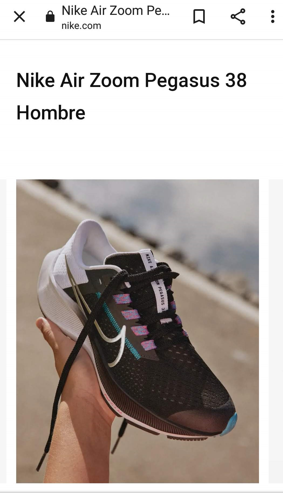

Rule of Thirds

Site: www.nike.com/ar
Nike uses the rule of thirds well here, making their product stand out and attract attention while creating balance on the page. In this example, the sneaker is right in the center of the imaginary lines of the rule, but Nike uses this rule well in other examples where the product is not always in the center.
Fitt’s Law
Site: www.soyhenry.com
Soy Henry uses a large yellow button here, which stands out from the rest so that the person who wants to take the course can do so by simply touching the button. It is designed and placed in such a way that it is almost the first thing the eye sees when entering your website.
White Space and Clean Design
Site: www.uala.com.ar
Ualá uses white space very well on its website, in addition to having a simple and clean design. The white space makes it easier to read, it takes hierarchy and has the focus on the brand name, the products it promotes (prepaid card, app, and a charging device), and the slogan it uses.